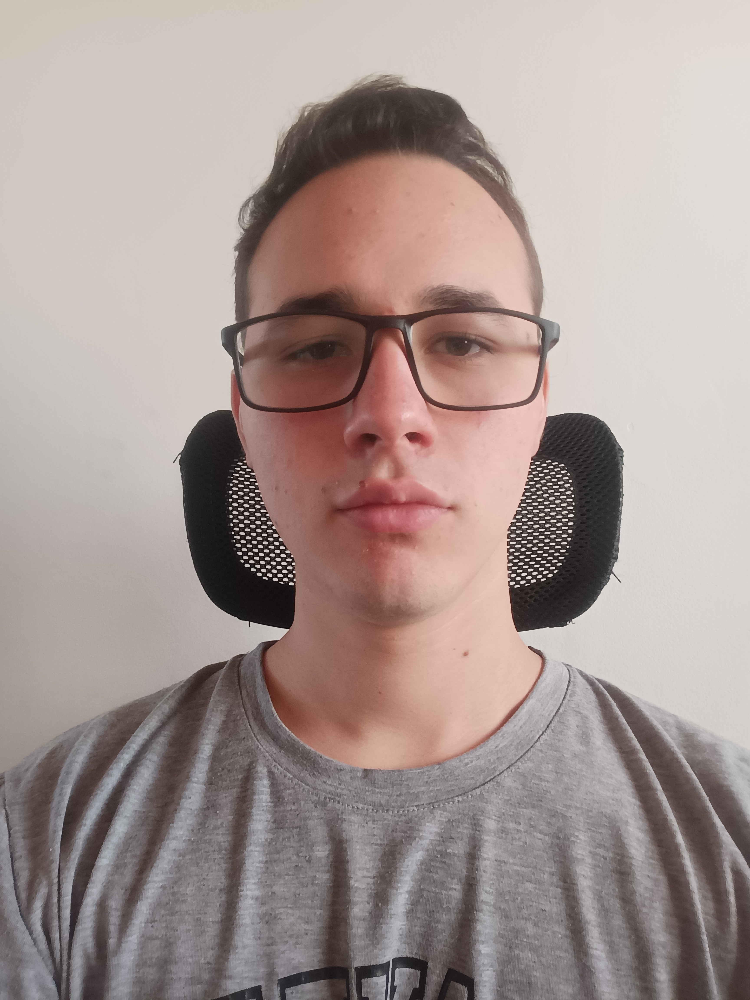

¿Quién soy?
Me llamo Leonardo Gabriel Naya, nací en Buenos Aires, Argentina y finalicé mis estudios en la Escuela Estatal Secundaria Técnica N°1 de Muñiz en 2022. Tengo conocimientos en Java, incluyendo librerías como Swing y JavaServlets, así como también tengo experiencia en Front-end con HTML, CSS y Javascript.
Actualmente estoy estudiando en la Universidad Tecnológica Nacional donde además estoy incluyendo un nuevo lenguaje a mi conocimiento que es C++.